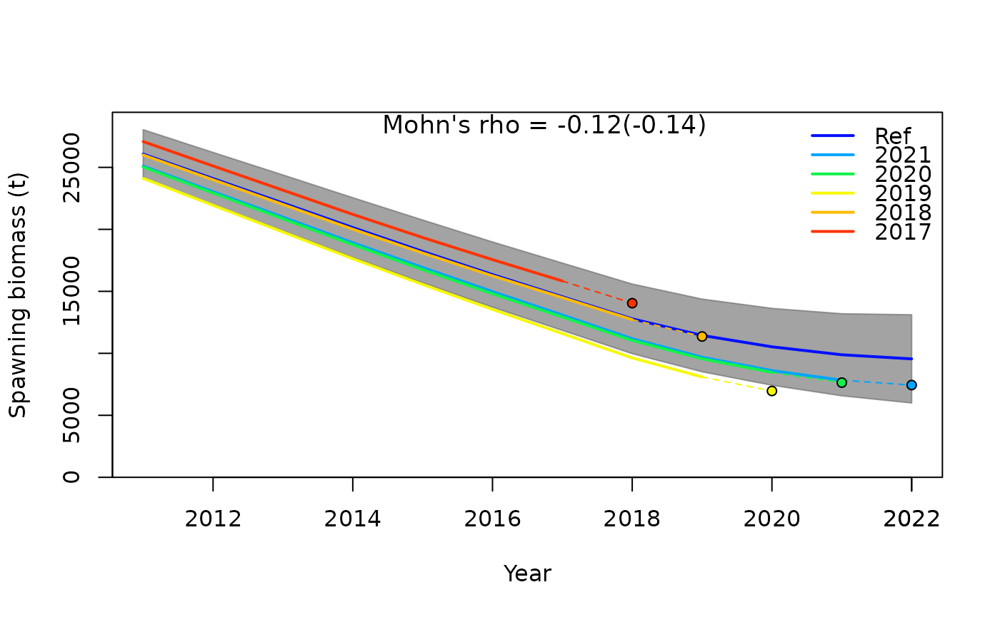
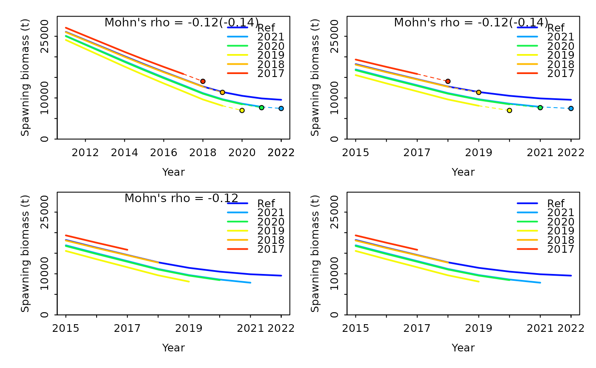

Retrospective Analysis
Source:vignettes/articles/Retrospective-Analysis.Rmd
Retrospective-Analysis.RmdRetrospective analysis is commonly used to check the consistency of
model estimates such as spawning stock biomass (SSB) and fishing
mortality (F) as the model is updated with new data in retrospect. The
retrospective analysis involves sequentially removing observations from
the terminal year (i.e., peels), fitting the model to the truncated
series, and then comparing the relative difference between model
estimates from the full-time series with the truncated time-series. To
implement a retrospective analysis with stock synthesis the
r4ss package provides the retro() function.
Here we provide a step-by-step example of how to run and analyze a
retrospective analysis using a simple, example SS model.
Model inputs
To run a stock synthesis model, 4 input files are required: starter,
forecast, control, and data. The input files for the example model can
be found within the ss3diags package and accessed as shown
below. Also, if you do not have r4ss installed, you will
need to install for this tutorial.
install.packages("pak")
pak::pkg_install("r4ss/r4ss")
library(r4ss)
files_path <- system.file("extdata", package = "ss3diags")
dir_retro <- file.path(tempdir(check = TRUE), "retrospectives")
dir.create(dir_retro, showWarnings = FALSE)
list.files(files_path)
#> [1] "control.ss" "data.ss" "forecast.ss" "starter.ss"
file.copy(from = list.files(files_path, full.names = TRUE), to = dir_retro)
#> [1] TRUE TRUE TRUE TRUEYou will need to make sure you have the SS
executable file either in your path or in the directory you are
running the retrospective from (in this case dir_retro). An
easy way to get the latest release of stock synthesis is to use the
r4ss function get_ss3_exe().
r4ss::get_ss3_exe(dir = dir_retro, version = "v3.30.21")
#> The stock synthesis executable for Linux v3.30.21 was downloaded to: /tmp/RtmpI0DiUd/retrospectives/ss3Retrospective Analysis
Once you have the 4 input files and SS executable, you can run
retrospective analysis as shown below. We are running it for 5 1-year
peels, so with each run, n years of data are removed from the
reference model and the model is re-run for a total of 5 times
(i.e. peel 1 removes the last year of data, peel 2 removes the last 2
years of data, etc.) . The number of year peels can be adjusted with the
years argument. If the SS executable file you are using is
named something other than “ss3” (e.g. ss_opt_win.exe), you will need to
specify this with the argument exe = "ss_opt_win". Full
documentation of the retro() function can be found on the
r4ss
website.
r4ss::retro(dir = dir_retro, exe = "ss3", years = 0:-5, verbose = FALSE)
#> Warning in base::sink(type = "output", split = FALSE): no sink to removeVisualizing Output
To visualize the output and inspect for any patterns or biases, you
need to load the report files into R and can use the
SSplotRetro() function from ss3diags. The
easiest way to load multiple report files is using
r4ss::SSgetoutput() and r4ss::SSsummarize()
functions. The default sub-directories for each peel, 0 to 5, are
labeled retro0 to retro-5.
retro_mods <- r4ss::SSgetoutput(dirvec = file.path(dir_retro, "retrospectives", paste0("retro", seq(0,-5,by=-1))), verbose = F)
retroSummary <- r4ss::SSsummarize(retro_mods, verbose = F)
SSplotRetro(retroSummary, subplots = "SSB", add = TRUE)
#> Mohn's Rho stats, including one step ahead forecasts:
#> type peel Rho ForecastRho
#> 1 SSB 2021 -0.20753686 -0.221050163
#> 2 SSB 2020 -0.19601072 -0.227304734
#> 3 SSB 2019 -0.29238505 -0.338600758
#> 4 SSB 2018 -0.00474920 -0.007462034
#> 5 SSB 2017 0.08716428 0.098849082
#> 6 SSB Combined -0.12270351 -0.139113722The default settings plot the spawning stock biomass time series for
each peel, with the reference run (e.g. model with no years removed) as
the “Ref” line and each successive peel as colored lines labeled by
their end year. The solid line ends at the end year and the dashed line
to the point shows the 1 year forecast. Displaying the projected SSB can
help assess forecast bias. Note, forecasts are done automatically when
using r4ss::retro() and are based on the settings in
forecast.ss. The grey shaded area represents the 95% confidence
intervals of uncertainty around the spawning biomass time series.
Displayed in the center of the plot is the combined Mohn’s \(\rho\) for all retrospective runs, and in
parentheses is the forecast Mohn’s \(\rho\).
Customizing the Plot
Retro plots can be customized in many ways, some common features that you may want to specify are:
- removing uncertainty intervals
- adjusting the years shown on the x-axis
- turning off the 1-year ahead forecasting
- not displaying the combined \(\rho\) value on the plot
Examples of each of these changes are shown below, incrementally making each adjustment.
r4ss::sspar(mfrow = c(2, 2), plot.cex = 0.8)
retro1 <- SSplotRetro(retroSummary, subplots = "SSB", add = TRUE, uncertainty = FALSE)
#> Mohn's Rho stats, including one step ahead forecasts:
retro2 <- SSplotRetro(retroSummary, subplots = "SSB", add = TRUE, uncertainty = FALSE, xlim = c(2015, 2022))
#> Mohn's Rho stats, including one step ahead forecasts:
retro3 <- SSplotRetro(retroSummary, subplots = "SSB", add = TRUE, uncertainty = FALSE, xlim = c(2015, 2022), forecast = FALSE)
#> Mohn's Rho stats, including one step ahead forecasts:
retro4 <- SSplotRetro(retroSummary, subplots = "SSB", add = TRUE, uncertainty = FALSE, xlim = c(2015, 2022), forecast = FALSE, showrho = FALSE, forecastrho = FALSE)
#> Mohn's Rho stats, including one step ahead forecasts:Additionally, the fishing mortality can be plotted instead of
spawning biomass by replacing subplots = "SSB" with
subplots = "F"
Summary Table
In addition to the retrospective plots, a summary statistics table
can be produced using SShcbias(). This table includes
- type of estimate (SSB or F)
- the year removed or “peel”
- Mohn’s \(\rho\)
- forecast bias
by year and overall (“Combined”). Mohn’s \(\rho\) is a measure of the severity of bias in the retrospective patterns and the forecast bias is an estimate of bias in the forecasted quantities when years of data were removed. The rule of thumb proposed by Hurtado-Ferror et al. (2014) for Mohn’s \(\rho\) values is that for long-lived species, the \(\rho\) value should fall between -0.15 and 0.20.
SShcbias(retroSummary)
#> Mohn's Rho stats, including one step ahead forecasts:
#> type peel Rho ForcastRho
#> 1 SSB 2021 -0.20753686 -0.221050163
#> 2 SSB 2020 -0.19601072 -0.227304734
#> 3 SSB 2019 -0.29238505 -0.338600758
#> 4 SSB 2018 -0.00474920 -0.007462034
#> 5 SSB 2017 0.08716428 0.098849082
#> 6 SSB Combined -0.12270351 -0.139113722
#> 7 F 2021 0.28425747 0.285936183
#> 8 F 2020 0.30941305 0.349748774
#> 9 F 2019 0.52629045 0.632574831
#> 10 F 2018 0.01822898 0.022822958
#> 11 F 2017 -0.04896989 -0.053882358
#> 12 F Combined 0.21784401 0.247440078